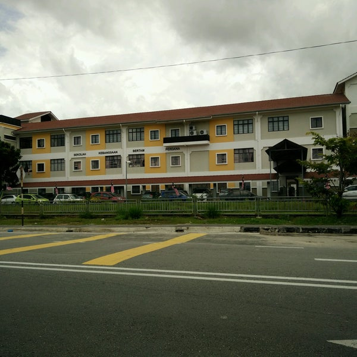
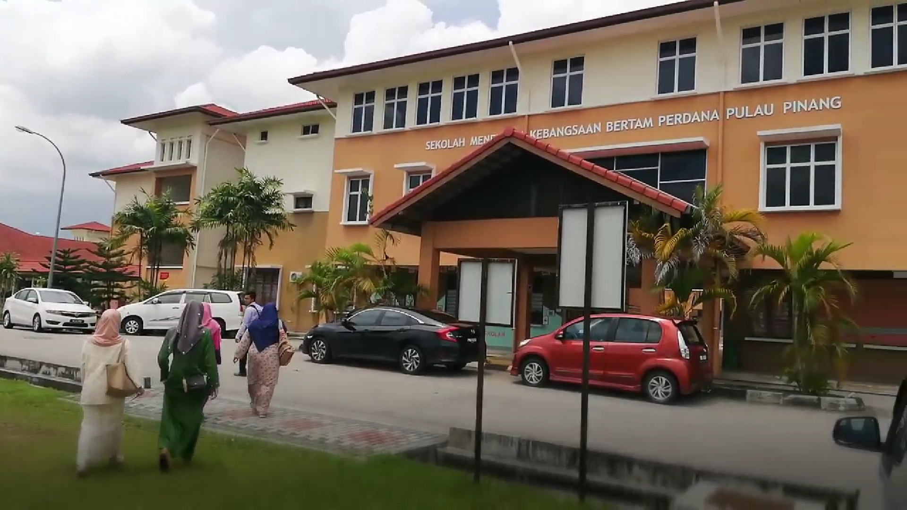
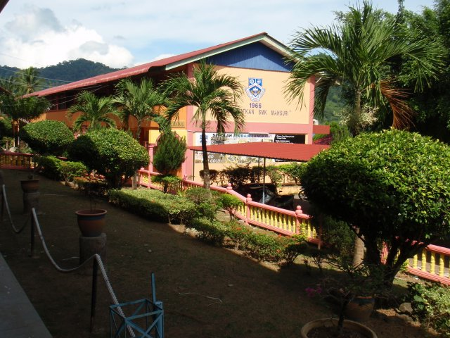
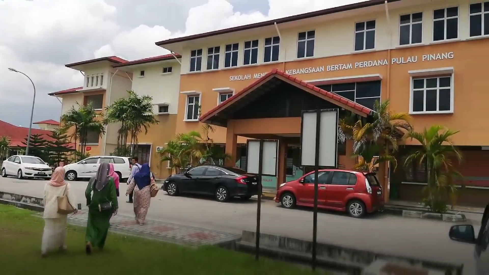
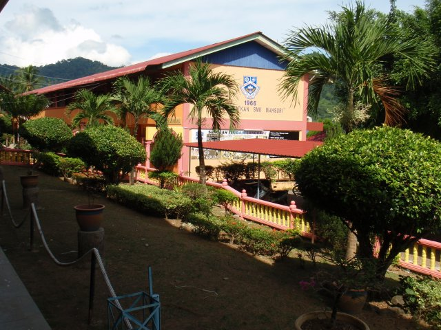
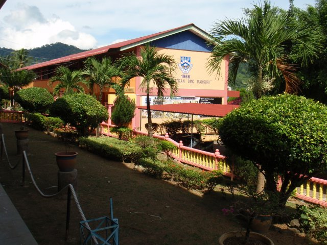

My Education
"An investment in knowledge always pays the best interest."
Education helps in unravelling the mystery of nature. It enables us to understand and improve the working of our society. It creates conditions for a better life. Education brings out the capabilities to fight injustice happening in society. Every individual has the right to education.
Here is a list of my educational journey pursuit:
| Year | School | Achievement |
|---|---|---|
| 2009 | Tadika Wawasan Bestari | Graduated |
| 2010 - 2015 | Sekolah Kebangsaan Bertam Perdana |
|
| 2016 - 2019 | Sekolah Menengah Kebangsaan Bertam Perdana |
|
| 2020 | Sekolah Menengah Kebangsaan Mahsuri |
|
| 2021 - 2024 | Universiti Teknologi MARA Kedah |
|
Sekolah Kebangsaan Bertam Perdana

Sekolah Menengah Kebangsaan Bertam Perdana

Sekolah Menengah Kebangsaan Mahsuri

Universiti Teknologi MARA Kedah

Sekolah Menengah Kebangsaan Bertam Perdana

Sekolah Menengah Kebangsaan Mahsuri

Universiti Teknologi MARA Kedah
Sekolah Menengah Kebangsaan Mahsuri

Universiti Teknologi MARA Kedah
Universiti Teknologi MARA Kedah